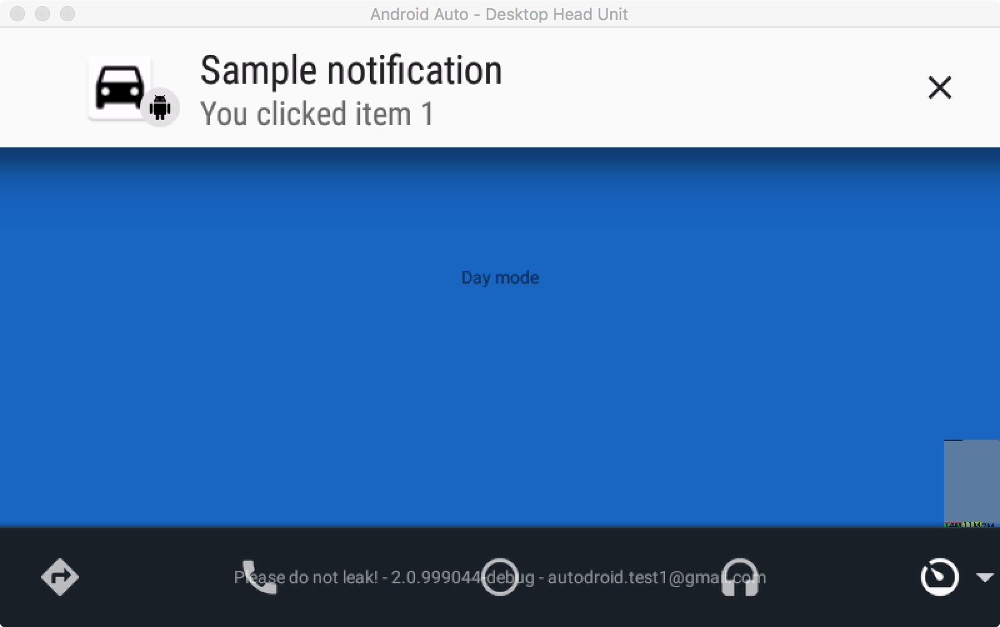
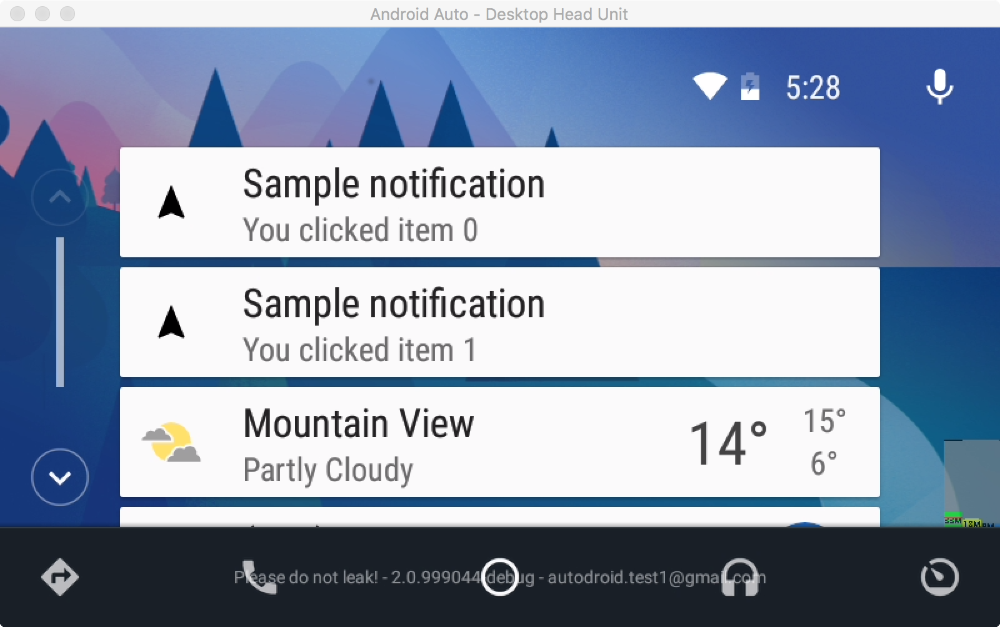

Notifications are a powerful paradigm in Android and we have enabled developers to use them within Android Auto using the CarNotificationExtender.
For a glimpse of what we can do with notifications in Android Auto, we will be modifying our sample activity such that when the user clicks on a menu entry, we display a notification with some text in it. This will also put a card on the home screen, which will allow the user to navigate back to your application by clicking the card.
We override the onMenuItemClicked() method in our MenuAdapter from before to be the point from where we trigger the notifications. Go ahead and modify the code such that it looks like this:
HelloWorldCarActivity.java
@Override
public void onMenuItemClicked(int position) {
Context context = HelloWorldCarActivity.this;
Intent intent = new Intent(context, HelloWorldService.class);
final String title = getString(R.string.sample_notification);
final String subtitle = getString(R.string.sample_notification_body) + position;
CarNotificationExtender extender = new CarNotificationExtender.Builder()
.setTitle(title)
.setSubtitle(subtitle)
.setShouldShowAsHeadsUp(true)
.setActionIntent(intent)
.setActionIconResId(R.drawable.ic_android_black_24dp)
.setThumbnail(BitmapFactory.decodeResource(getResources(),
R.mipmap.ic_car))
.build();
NotificationCompat.Builder builder = new NotificationCompat.Builder(context)
.setContentTitle(title)
.setContentText(subtitle)
.setSmallIcon(R.drawable.ic_android_black_24dp)
.extend(extender);
NotificationManagerCompat notificationManager =
NotificationManagerCompat.from(context);
notificationManager.notify(position, builder.build());
}Compile and deploy your code. Now when you click any of the menu items, you should see a notification like the one in the image below. The example here is of a heads up notification; read the documentation for the CarNotifcationExtender class for the details on how to use notifications within Android Auto.

Posting a notification also adds it to the home screen. If you click the home button on the Activity bar, you will see notifications your application has posted represented as cards. Clicking the cards will trigger the action intent that was set in the extender, causing your application to be launched with that intent.

Android Auto has a rich set of notification driven features and you are encouraged to read the documentation and to explore the full extent of this API.